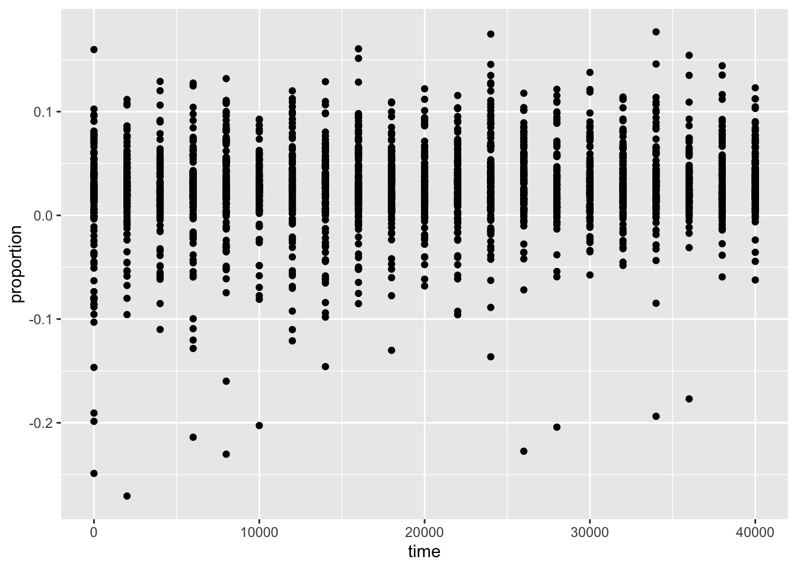
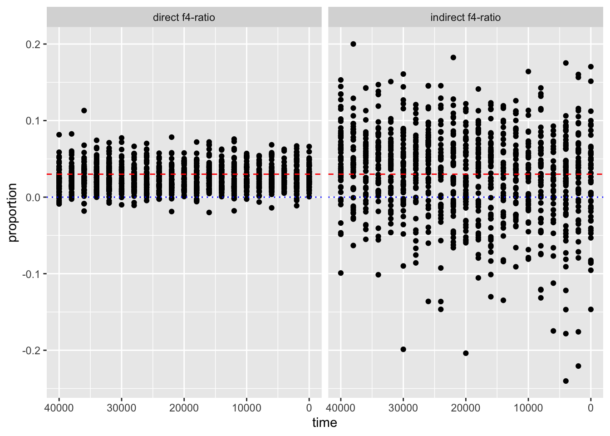

library(ggplot2) # the star of the day!
library(dplyr)
library(tidyr)
library(readr)Advanced data science
In this chapter, we will be delving into the data visualization R package called ggplot2, which is possibly the most famous piece of the tidyverse ecosystem. So much so that people who otherwise don’t use any tidyverse functions (or even who don’t even use R for data analysis itself) still use ggplot2 for making figures. It really is that good.
Here is how the start of our solutions script for the day will look like. Note the addition of library(ggplot2) to the list of R packages used in the previous chapter. Although you could use ggplot2 without the rest, it ties so neatly with every other part of the tidyverse ecosystem that you almost always end up using them together.
Let us also read in data which we will be using in these exercises. These are coordinates of identity-by-descent (IBD) segments between pairs of individuals in a huge aDNA study we’ve already talked about. This data is huge and quite complex – I’ve prefiltered it to contain only IBD segments for chromosome 1.
Why use IBD for these exercises? First, IBD data are increasingly popular across population genomics and evolutionary biology, so it’s very likely you will encounter it in your own work. Second, it’s an excellent data se on which you can practice and develop your data science skills.
gz_file <- tempfile()
download.file("https://tinyurl.com/simgen-ibd", gz_file, mode = "wb", quiet = TRUE)
ibd_all <- read_tsv(gz_file, show_col_types = FALSE)And we also need to read the corresponding metadata, with which you are already very closely familiar with:
metadata_all <- read_tsv("https://tinyurl.com/simgen-metadata", show_col_types = FALSE)Create a new R script in RStudio, (File -> New file -> R Script) and save it somewhere on your computer as tidy-viz.R (File -> Save). Copy the two chunks of code above into it and let’s get started!
You just got a new data set from a bioinformatics software, in this case the IBDseq software for detecting IBD segments between pairs of individuals. Before you proceed with doing any kind of statistical analysis you need to do two things:
- Exploring the data to see what is it that you just got.
- Filtering and processing it in a way which will make your work easier.
Let’s tackle step 1 first.
Exercise 1: Exploring new data
As a sanity check, do you have metadata information for every individual in the sample1 and sample2 columns of the IBD table? What about the other way around – do all individuals in the metadata have some IBD relationship to another individual? If not, find out which individuals are these.
This is another sort of sanity checking you will be doing all the time. We can only analyze data for which we have metadata information (population assignment, geographical location, dating information), so let’s make sure we have what we need.
Hint: Another way to phrase this question is this: does every name that appears in either sample1 or sample2 column of ibd have a record in the sampleId column of metadata (i.e., is information in one vector of names a perfect subset of the second vector of names)? Remember that you can use the function unique() to get all unique values in a given vector (as in, all unique values in vector ibd$sample1 which has otherwise many duplicated entries). And remember the existence of %in% and ! operators!
Which columns does the IBD data have? What’s the format of the data? What ranges or distributions of values do you have available, and with what data types? Do you have information for the entire genome?
Exercise 2: IBD processing
Add a new column using the mutate() function called length, which contains the length of each IBD segment in centimorgans (end - start). Save the result to a new variable ibd.
We have processed our IBD table a bit, so let’s proceed with the metadata. There’s much more information than we need for now, so let’s make the data a bit smaller and easier to look at at a glance.
select() a subset of the metadata with the following columns and store it in the same variable metadata: sampleId, country, ageAverage. Then rename() sampleId to sample, popId to pop, and ageAverage to age just to save ourselves some typing.
Just as you did in the previous chapter, use mutate() and if_else() to make sure that the “Modern” individuals have the age set to 0, instead of NA (and everyone else’s age stays the same). In other words, replace the NA values of age with 0.
Our analyses will exclusively focus on modern humans. Filter out the three archaics in the metadata, saving the results into the same metadata variable again. As a reminder, these are individuals whose sample name is among c("Vindija33.19", "AltaiNeandertal", "Denisova") which you can test in a filter() command using the %in% operator.
Hint: Remember that you can do not only column %in% c(... some values...) but also do the opposite test as !column %in% c(... some values...) (notice the ! operator in the second version).
Exercise 4: Metadata processing
We now have a cleaner IBD table looking like this:
head(ibd)# A tibble: 6 × 6
sample1 sample2 chrom start end length
<chr> <chr> <dbl> <dbl> <dbl> <dbl>
1 Gjerrild5 kzb005 1 2.23 4.73 2.51
2 Gjerrild5 HG01438 1 2.23 4.73 2.51
3 Gjerrild5 NA19649 1 2.23 4.73 2.51
4 DA248 DA341 1 2.23 4.73 2.51
5 DA249 DA340 1 2.23 4.73 2.51
6 DA249 DA341 1 2.23 4.73 2.51And here’s our metadata information:
head(metadata)# A tibble: 6 × 3
sample country age
<chr> <chr> <dbl>
1 NA18486 Nigeria 0
2 NA18488 Nigeria 0
3 NA18489 Nigeria 0
4 NA18498 Nigeria 0
5 NA18499 Nigeria 0
6 NA18501 Nigeria 0Our set has only two values, “Modern” and “Ancient”. Although useful, we might want to do some fancier analyses later down the line, looking at IBD as a time series.
Let’s introduce an incredibly useful function called cut(). Take a look at ?cut help page and skim through it to figure out what it does. As a bit of a hint, we will want to add a new metadata column which will indicate in which age bin (maybe, split in steps of 5000 years) do our individuals belong to.
Here’s a small example to help us get started. Think about what the cut() function does here based on the result it gives you. You can pretend for now that the ages variable corresponds to age of our samples in the huge metadata table:
# a toy example data frame mimicking the age column in our huge metadata table
df <- data.frame(age = c(0, 0, 1000, 0, 5000, 10000, 7000, 13000, 18000, 21000, 27000, 30000))
# let's first generate the breakpoints for our bins (check out `?seq` if
# you're confused by this!)
breakpoints <- seq(0, 50000, by = 5000)
breakpoints [1] 0 5000 10000 15000 20000 25000 30000 35000 40000 45000 50000# binning the age into groups using our breakpoints
df$age_bin <- cut(df$age, breaks = breakpoints)
df age age_bin
1 0 <NA>
2 0 <NA>
3 1000 (0,5e+03]
4 0 <NA>
5 5000 (0,5e+03]
6 10000 (5e+03,1e+04]
7 7000 (5e+03,1e+04]
8 13000 (1e+04,1.5e+04]
9 18000 (1.5e+04,2e+04]
10 21000 (2e+04,2.5e+04]
11 27000 (2.5e+04,3e+04]
12 30000 (2.5e+04,3e+04]Note: The function cut() is extremely useful whenever you want to discretize some continuous variable in bins (basically, a little similar to what a histogram does in context of plotting). Doing statistics on this kind of binned data is something we do very often. So never forget that cut() is there to help you!
In the example of the cut() function right above, what is the data type of the column age_bin created by the cut() function? Use glimpse(df) to see this data type, then skim through the documentation of ?factor. Additionally, why is the age_bin value equal to NA for some of the values? (We will fix this later, don’t worry.)
As you’re thinking about these questions, consider the two following vectors. When you print them out in your R console (by typing x1 and x2) you will get something that looks almost identical. **What happens when you apply the typeof() function on both of them? x2 gives you a strange result – why? What do you get when you run the following command levels(x2)? What do you get when you run as.character(x2)?
x1 <- c("hello", "hello", "these", "are", "characters/strings")
x2 <- factor(x1)
x1[1] "hello" "hello" "these"
[4] "are" "characters/strings"x2[1] hello hello these are
[5] characters/strings
Levels: are characters/strings hello theseNote: The discussion of “factors” should’ve been technically part of our R bootcamp chapter, on the topic of “data types”. However, that section was already too technical, so I decided to move it here to the data analysis section, because I think it makes more sense to explain it in a wider context.
The scientific notation format of bin labels with all those + is very annoying to look at. How can you use the dig.lab = argument of the cut() functions to make this prettier? Experiment in the R console to figure this out, then modify the df$age_bin <- cut(df$age, breaks = breakpoints) command in your script accordingly.
You have now learned that cut() has an optional argument called include.lowest =, which includes the lowest value of 0 (representing the “present-day” age of our samples) in the lowest bin [0, 5]. However, in the case of our assignment of samples from present-day, this is not what we want. We want present-day individuals to have their own category called “present-day”.
Here’s a useful bit of code I use often for this exact purpose. If we start from the original toy example data frame (with the NA values assigned to present-day ages of 0):
df age age_bin
1 0 <NA>
2 0 <NA>
3 1000 (0,5000]
4 0 <NA>
5 5000 (0,5000]
6 10000 (5000,10000]
7 7000 (5000,10000]
8 13000 (10000,15000]
9 18000 (15000,20000]
10 21000 (20000,25000]
11 27000 (25000,30000]
12 30000 (25000,30000]We can fix this by the following three-step process, described in the comments:
bin_levels <- levels(df$age_bin) # 1. extract labels (no "present-day" category yet)
df <-
df %>%
mutate(
age_bin = as.character(age_bin), # 2. convert factors into strings
age_bin = if_else(is.na(age_bin), "present-day", age_bin) # 3. replace NA with "present-day"
)When we print the modified df table, we see all bins properly assigned now, including the present-day samples with ages at 0:
df age age_bin
1 0 present-day
2 0 present-day
3 1000 (0,5000]
4 0 present-day
5 5000 (0,5000]
6 10000 (5000,10000]
7 7000 (5000,10000]
8 13000 (10000,15000]
9 18000 (15000,20000]
10 21000 (20000,25000]
11 27000 (25000,30000]
12 30000 (25000,30000]This is a very useful pattern which you will get to practice now on the full metadata table.
Now that you’re familiar with cut(), use the functions mutate() and cut() again to create a new column age_bin this time on the whole metadata table. The new column should carry a category age of each individual in steps of 2000 years again. Use the example from above to do this. Use `table(metadata$age_bin) to sanity check your final results.
Hint: As we did above, first assign the age_bin column using the cut() function, then modify the column accordingly with the mutate() snippet to set “present-day” in the age_bin for all present-day individuals.
ibd <- inner_join(ibd, metadata1)Joining with `by = join_by(sample1)`ibd <- inner_join(ibd, metadata2)Joining with `by = join_by(sample2)`The paste() function (and also paste0()) are very useful whenver we need to join the elements of two (or more) character vectors together. The difference between then is that paste0() doesn’t add a space between the individual values and paste() does (the latter also allows you to customize the string which should be used for joining instead of the space). For instance, consider these two vectors and the result of joining them together:
v1 <- c("Denmark", "Czech Republic", "Estonia")
v2 <- c("Finland", "Italy", "Estonia")
paste(v1, v2, sep = ":")[1] "Denmark:Finland" "Czech Republic:Italy" "Estonia:Estonia" Use the same principle to add a new column to your ibd table named geo_pair, which will contain a vector of values created by joining of the columns country1 and country2. Add this column .after the sample1 and sample2 and .before the chrom columns for clearer visibility. Save the result back to the ibd variable.
In addition to computing statistics across pairs of geographical regions, we will also probably want to look at temporal patterns. Create a new column time_pair, which will in this case contains a paste() combination of age_bin1 and age_bin2, added .after the geo_pair column. Save the result back to the ibd variable.
As a final step, because we have all annotation available in our two pair columns, drop the individual country, age, and age_bin columns using the select() function (remember the starts_with() helper functions?), and save the result back into the ibd variable.
Exercise 6: Reproducibility intermezzo
You have written a lot of code in this chapter, both for filtering and processing of the IBD data and the metadata. Your script is already very long. If you need to ever update or change something (which you always will during a project, usually many times over) it can be hard to figure out which line of your script should be modified. If you forget to update something somewhere in a long script, you’re in big trouble (and sometimes you won’t even find out where’s the problem until its too late).
Our session on reproducibility is in the following chapter, but let’s work towards making your current workflow more reproducible even now.
Create a new script called ibd_utils.R in your RStudio and create the following functions. Then take bits and pieces from the exercises used above and add then to the bodies of these functions accordingly.
- function
process_ibd()which will (without accepting any arguments):
- download the IBD data from the internet like you did above,
- process it in the same way you did above,
- return the processed
tibbleobject with IBD segments
- function
process_metadata(), which will (without accepting any arguments):
- download the metadata from the internet like you did above,
- process and filter it in the same way like above (replacing
NAinagecolumn, filtering out unwanted individuals, adding theage_bincolumn, etc.) - return the processed
tibbleobject with metadata
- function
join_metadata(), which will accept argumentsibdandmetadata(produced by the two functions above) and then:
- join the
ibdtable with themetadatatable - add the
geo_paircolumn withcountry1-country2information - return the finalized
tibblewith all information
Do not write all the code at once! Start with the first function, test it by executing it in your R console, and check that your results make sense before you move on to the other function. Building up more complex pipelines from simple components is absolutely critical to minimize bugs!
Make sure to add comments to your code! Reproducibility is only half of the story – you (and other people) need to be able to understand your code a long time after you wrote it.
After you’re done with this exercise, you should create a new script (you can name it something like ibd_analysis.R) and be able to add the following code.
Note: The source() command executes all the code in your utility script and therefore makes your custom-built functions available in your R session. This is an incredibly useful trick which you should use all the time whenever you modularize your code into reproducible functions in their own scripts.
source("ibd_utils.R")
ibd <- process_ibd()
metadata <- process_metadata()
ibd <- join_metadata(ibd, metadata)Downloading and processing IBD data...Downloading and processing metadata...Joining IBD data and metadata...Joining with `by = join_by(sample1)`
Joining with `by = join_by(sample2)`Hint: If this looks overwhelming and scary, then remember that function is a block of code (optionally accepting arguments) which simply wraps in { and } the code already written by you above, and calls return on the result.
Hint: An extremely useful shortcut when writing R functions is “Run function definition” under Code -> Run region. Remember that keyboard shortcut! (On macOS it’s Option+CMD+F).
It’s worth pausing here and reflecting on what we’ve just done. Yes, we took (lots!) of code already written and basically “just moved it elsewhere”. But consider how clean your new script ibd_analysis.R is and how easily readable it is. What we’ve done is sometimes called “abstraction” in software engineering. We took components of our pipeline, and “hidden” them away so that we no longer have to think in terms of select(), filter(), group_by(), etc. We now can think about steps called process_ibd(), process_metadata(), and join_metadata(). Much less code to look at and think about! Plus, if we do need to take a deep dive into details, we just have to look at the code of our functions!
**Point your cursor somewhere inside the process_ibd() call in your new script ibd_analysis.R and press “CTRL+.”. This is how easy it is to navigate code, even when we modularized it!
Having your processing and filtering code available in a self-contained modularized way will make a huge difference in later parts of our workshop.
Exercise 6: Data visualization with ggplot2
Distribution of categorical variable
geom_bar()
ggplot(metadata)
ggplot(metadata, aes(x = age_bin))
ggplot(metadata, aes(x = age_bin)) + geom_bar()
Let’s add more layers! Use a xlab() function to add an x-axis label element using the + operator.
Just as we did with tidyverse %>% data transformation pipelines, as a ggplot2 visualization pipeline gets more complex, it’s a good idea to introduce indentation so that each visualization steps is on its own line.
ggplot(metadata, aes(x = age_bin)) +
geom_bar() +
xlab("Time period [years before present]")
Now continue adding y-axis label with the ylab() function.
ggplot(metadata, aes(x = age_bin)) +
geom_bar() +
xlab("Time period [years before present]") +
ylab("Number of individuals")
Give your figure a proper main title using the function ggtitle().
ggplot(metadata, aes(x = age_bin)) +
geom_bar() +
xlab("Time period [years before present]") +
ylab("Number of individuals") +
ggtitle("Distribution of sample counts in each time period")
I don’t know about you, but I don’t like how the x-axis labels are overlapping. A solution to this is to use custom theming of plots, but for now, a good workaround is a function coord_flip(). Add it to your figure again using the + operator and observe what happens. Notice what this does to your x- and y-axis labels, and fix the problem!
ggplot(metadata, aes(x = age_bin)) +
geom_bar() +
xlab("Time period [years before present]") +
ylab("Number of individuals") +
ggtitle("Distribution of sample counts in each time period") +
coord_flip()
Although individual functions xlab(), ylab(), ggtitle() are useful, oftentimes it’s better to use a general function labs(). Look up its documentation under ?lab, then rewrite the code for your figure to use only this function, replacing your uses of xlab(), ylab(), and ggtitle() just with labs(). Note that the function has other useful arguments – go ahead and use as many of them as you want.
Note: Don’t worry about making your figure cluttered, this is just for practice. In a real paper, you wouldn’t use title or caption directly in a ggplot2 figure, but it’s definitely useful for work-in-progress reports at meetings, etc.
ggplot(metadata, aes(x = age_bin)) +
geom_bar() +
labs(
y = "Number of individuals",
x = "Time period [years before present]",
title = "Distribution of sample counts in each time period",
subtitle = "Counts for individuals in 1000 Genomes Project and MesoNeo data",
caption = "Here is an optional caption for the figure, similarly to what
you might do in a real scientific article as a more detailed description of
of what is going on in the plot."
) +
coord_flip()Does the order of adding layers with the + operator matter? Do a little experiment to figure it out!
No it doesn’t. This is another very useful feature of ggplot2. Remember that a huge important part of an R data science workflow is interactive communication with an R console. You can start with a little bit of code which produces a basic outline of your figure and continue adding useful bits and pieces to it, modifying the outcome as you go. Almost like an artist!
By the way, it’s useful to keep in mind that you can always pipe a data frame into a ggplot() function using the %>% operator. I.e., instead of writing ggplot(metadata, aes(...)), you can also do metadata %>% ggplot(aes(...)). This allows you to transform or summarize data before plotting, which makes the combination of tidyverse and ggplot2 infinitely stronger.
Just for practice, filter() the metadata first for individuals who are 10000 years or older, discarding the rest. Then pipe this filter() result into your ggplot() code, keeping the plotting part exactly the same.
metadata %>%
filter(age > 10000) %>%
ggplot(aes(x = age_bin)) +
geom_bar() +
labs(
y = "Number of individuals",
x = "Time period [years before present]",
title = "Distribution of sample counts in each time period",
subtitle = "Counts for individuals in 1000 Genomes Project and MesoNeo data",
caption = "Here is an optional caption for the figure, similarly to what
you might do in a real scientific article as a more detailed description of
of what is going on in the plot."
) +
coord_flip()
Believe it or not, with this basic structure of ggplot2 visualization and combining this with any other type of tidyverse manipulation, filtering, and (as we’ll later see), summarization, you’re ready to make any figure imaginable. Let’s take this one step further.
Let’s show how flexible the ggplot2 “grammar of graphics” is. Modify the visuals of your figure by replacing geom_bar() with `geom_point() in the final version of your barplot figure. Why doesn’t the code work? Carefully read the message you get from R when you do this, and try to figure out what the problem is. The solution comes in the next part.
The solution on its own would be this:
ggplot(metadata, aes(x = age_bin)) +
geom_point() +
labs(
y = "Number of individuals",
x = "Time period [years before present]",
title = "Distribution of sample counts in each time period",
subtitle = "Counts for individuals in 1000 Genomes Project and MesoNeo data",
caption = "Here is an optional caption for the figure, similarly to what
you might do in a real scientific article as a more detailed description of
of what is going on in the plot."
) +
coord_flip()Error in `geom_point()`:
! Problem while setting up geom.
ℹ Error occurred in the 1st layer.
Caused by error in `compute_geom_1()`:
! `geom_point()` requires the following missing aesthetics: y.But it gives you an error! Don’t panic!
The previous answer gives you an error stating: **
geom_point()requires the following missing aesthetics: y.
You’ve already heard about “mapping aesthetics”, and the error tells you that geom_point() need both x and y coordinates to plot the elements of a figure. geom_bar() counts the number of individuals in each age group automatically which is why aes(x) was enough. But geom_point() needs us to specify aes(x, y) explicitly.
You already know how to do it! As you learned in the previous chapter, use the metadata %>% group_by(age_bin) %>% summarize(count = n()) pipeline to compute the count in each age bin, and then use that count as the y = count mapping!
Hint: This is a very similar technique to the one you used to only plot individuals older than 10000 years using filter() above.
Note how our code is almost the same, we just needed to change a couple of things to get a different figure! This is why tidyverse is so elegant and powerful (and even easy, once you get familiar with it)! We can use the same patterns and actions over and over and over again, and get new figures in infinite number of variations!
metadata %>% # here is data processing / summarization part
group_by(age_bin) %>%
summarise(count = n()) %>%
ggplot(aes(x = age_bin, count)) + # and this is the plotting part
geom_point() +
labs(
y = "Number of individuals",
x = "Time period [years before present]",
title = "Distribution of sample counts in each time period",
subtitle = "Counts for individuals in 1000 Genomes Project and MesoNeo data",
caption = "Here is an optional caption for the figure, similarly to what
you might do in a real scientific article as a more detailed description of
of what is going on in the plot."
) +
coord_flip()Distribution of a numerical variable
geom_histogram()
In the previous exercise you visualized a distribution of a categorical variable, specifically the number of counts of samples in an age category. Now let’s look at continuous variables and consider your metadata table again:
head(metadata)# A tibble: 6 × 8
sample population country age coverage longitude latitude age_bin
<chr> <chr> <chr> <dbl> <dbl> <dbl> <dbl> <fct>
1 NA18486 YRI Nigeria 0 NA NA NA present-day
2 NA18488 YRI Nigeria 0 NA NA NA present-day
3 NA18489 YRI Nigeria 0 NA NA NA present-day
4 NA18498 YRI Nigeria 0 NA NA NA present-day
5 NA18499 YRI Nigeria 0 NA NA NA present-day
6 NA18501 YRI Nigeria 0 NA NA NA present-dayLet’s visualize the distribution of coverage values across our individuals!
You can visualize a density of values using the function geom_histogram(). For instance, your data has a column coverage. Visualize the density distribution of coverages across all individuals in your data set, starting from the (admittedly overly simplified – for now!) pattern of ggplot() + geom_histogram(). Of course, you have to fill in the aes() accordingly. Try to use the knowledge you obtained in the previous exercise!
Click to see the solution
metadata %>%
ggplot(aes(coverage)) +
geom_histogram()`stat_bin()` using `bins = 30`. Pick better value with `binwidth`.Warning: Removed 2504 rows containing non-finite outside the scale range
(`stat_bin()`).
You got a warning that 2504 rows have non-finite values. This is because present-day individuals in our metadata lack a coverage value. In the spirit of building composite tidyverse pipelines, filter() out present-day individuals before you plot the coverage distribution.
Note: Never ever ignore warnings, unless you know exactly where they come from and can be sure they are harmless! Imagine dropping a warning like this in a situation in which an important category would be completely missing values. Your results would be very skewed, leading you to the wrong conclusion!
Click to see the solution
metadata %>%
filter(age > 0) %>%
ggplot(aes(coverage)) +
geom_histogram()`stat_bin()` using `bins = 30`. Pick better value with `binwidth`.
The distribution of coverages across all individuals is not that informative. Maybe we can take a look at those distributions across different categories?
We clearly have two sets of categories we might be interested in. One is perhaps the country of origin, the other the age_bin. Let’s introduce a new mapping of an aesthetic called fill. In your aes() call, in addition to aes(x = age), write aes(x = age, fill = age_bin). What happens when you do this?
Staying with this exercise, what’s the difference between setting the fill aesthetic with aes(x = age, fill = age_bin) and the color aesthetic with aes(x = age, fill = age_bin)? What if you do both?
Click to see the solution
The fill mapping is useful for filling out geometries which involve “areas” of some kind (like a histogram or a barplot). The color mapping is more useful for outlines alone, like we’ll see in a following exercise on plotting densities. For now just remember that fill and color are useful parameters that you can set for basically every plotting function in ggplot2!
metadata %>%
filter(age > 0) %>%
ggplot(aes(coverage, fill = age_bin)) +
geom_histogram()`stat_bin()` using `bins = 30`. Pick better value with `binwidth`.
metadata %>%
filter(age > 0) %>%
ggplot(aes(coverage, color = age_bin)) +
geom_histogram()`stat_bin()` using `bins = 30`. Pick better value with `binwidth`.
There are two ways in which you can adjust the binning of a ggplot2 histogram. Check out ?geom_histogram and experiment a little bit.
Note: The arguments you find which modify the visualization of a histogram are not mapping, so they don’t belong in the aes() call, but either after it (in the ggplot() call) or you can put them directly inside the geom_histogram(...) call. I always get this wrong, so whenever you have issues with this, take a look where you’re specifying these optional arguments!
Click to see the solution
- We have the
binsargument which changes the number of bins. This sets the number of histogram bars to a hardcoded value of 100:
metadata %>%
filter(age > 0) %>%
ggplot(aes(coverage, fill = age_bin)) +
geom_histogram(bins = 100)
- And we have the
binwidthargument which changes the width of each bin. This spaces each bar of the histogram at 1 point of coverage:
metadata %>%
filter(age > 0) %>%
ggplot(aes(coverage, fill = age_bin)) +
geom_histogram(binwidth = 1)
In addition to bins and binwidth, the function geom_histogram() has two additional arguments:
positionhas the default value"stack", but can also be set to"identity"or"dodge",alpha, which can have a value between 0 and 1 (1 being the default).
What happens when you set position = "identity" and alpha = 0.5? How is the result different from the default (which is either geom_histogram() alone or geom_histogram(position = "stack"))?
Click to see the solution
- Here is the default:
metadata %>%
filter(age > 0) %>%
ggplot(aes(coverage, fill = age_bin)) +
geom_histogram() # same as geom_histogram(position = "stack")`stat_bin()` using `bins = 30`. Pick better value with `binwidth`.
- Here is the
"dodge"variant:
metadata %>%
filter(age > 0) %>%
ggplot(aes(coverage, fill = age_bin)) +
geom_histogram(position = "dodge")`stat_bin()` using `bins = 30`. Pick better value with `binwidth`.
- And here is the
"identity"variant. Note that we should probably specify thealphatransparency too!
metadata %>%
filter(age > 0) %>%
ggplot(aes(coverage, fill = age_bin)) +
geom_histogram(position = "identity")`stat_bin()` using `bins = 30`. Pick better value with `binwidth`.
metadata %>%
filter(age > 0) %>%
ggplot(aes(coverage, fill = age_bin)) +
geom_histogram(position = "identity", alpha = 0.6)`stat_bin()` using `bins = 30`. Pick better value with `binwidth`.
Faceting intermezzo
metadata %>%
filter(age > 0) %>%
ggplot(aes(coverage, fill = age_bin)) +
geom_histogram() +
facet_wrap(~ age_bin, scales = "free_y")`stat_bin()` using `bins = 30`. Pick better value with `binwidth`.
Combining figures
Two numerical variables
geo_df <-
metadata %>%
filter(age > 0) %>%
group_by(country) %>%
summarize(
count = n(),
avg_lat = mean(latitude, na.rm = TRUE),
avg_lon = mean(longitude, na.rm = TRUE),
avg_cov = mean(coverage, na.rm = TRUE)
)p1 <-
ggplot(geo_df, aes(x = avg_lat, y = count)) +
geom_point() +
coord_cartesian(xlim = c(-90, 90))p2 <-
ggplot(geo_df, aes(x = avg_lon, y = count)) +
geom_point() +
coord_cartesian(xlim = c(-90, 90))library(cowplot)
plot_grid(p1, p2)
p1 <- p1 + geom_smooth(method = "lm")p2 <- p2 + geom_smooth(method = "lm")plot_grid(p1, p2)`geom_smooth()` using formula = 'y ~ x'
`geom_smooth()` using formula = 'y ~ x'
Exercise 7: Summarizing IBD data
OK, data munging (widely acknowledged to be the most annoying part of doing data science) is done. Time to do some data exploration and science! In this and later exercises you will get to practice your tidyverse skills from the previous chapter on your new exciting IBD data.
ibd_today <- filter(ibd, time_pair == "present-day:present-day")
ibd_today# A tibble: 671,001 × 12
sample1 sample2 geo_pair time_pair chrom start end length longitude1
<chr> <chr> <chr> <chr> <dbl> <dbl> <dbl> <dbl> <dbl>
1 HG00096 HG02230 UK:Spain present-day:p… 1 2.23 4.73 2.51 NA
2 HG00097 HG00277 UK:Finland present-day:p… 1 2.23 4.73 2.51 NA
3 HG00097 HG01685 UK:Spain present-day:p… 1 2.23 4.73 2.51 NA
4 HG00097 NA20531 UK:Italy present-day:p… 1 2.23 4.73 2.51 NA
5 HG00099 HG00330 UK:Finland present-day:p… 1 2.23 4.73 2.51 NA
6 HG00099 NA11830 UK:Europe present-day:p… 1 2.23 4.73 2.51 NA
7 HG00099 NA11840 UK:Europe present-day:p… 1 2.23 4.73 2.51 NA
8 HG00100 HG01786 UK:Spain present-day:p… 1 2.23 4.73 2.51 NA
9 HG00101 NA20522 UK:Italy present-day:p… 1 2.23 4.73 2.51 NA
10 HG00102 NA12273 UK:Europe present-day:p… 1 2.23 4.73 2.51 NA
# ℹ 670,991 more rows
# ℹ 3 more variables: latitude1 <dbl>, longitude2 <dbl>, latitude2 <dbl>Plot the distribution of lengths of IBD segments overall.
ibd_today %>%
ggplot() +
geom_density(aes(length))
ibd_today %>%
ggplot() +
geom_density(aes(length)) +
geom_vline(xintercept = 2) +
coord_cartesian(xlim = c(0, 10))Use group_by() and summarize() to compute the total length of IBD sequence for each pair of sample1 and sample2 by summing it up into a new column total. Save the result into a variable ibd_indiv. Sort the result based on this computed total using the arrange() function.
Although interesting, the previous result only shows the total for each combination of sample1 and sample2, because group_by() lost other metadata (we only told it to group by the sample names). Modify your solution to the previous exercise by grouping not just based on samples, but also based on geo_pair and time_pair. This will allow us to investigate IBD patterns geographically and temporally.
Hint: Just as you did group_by(sample1, sample2) in the previous solution, add the additional pair columns you want to group over after sample1, sample2.